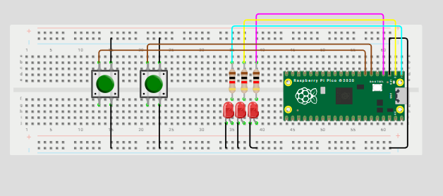

Inputs
Compuertas básicas AND / OR / XOR con 2 botones
Qué debe hacer
Con dos botones A y B (pull-up; presionado=0) enciende tres LEDs que muestren en paralelo los resultados de AND, OR y XOR. En el video muestra las 4 combinaciones (00, 01, 10, 11).
#include "pico/stdlib.h"
#define BTN_A 5
#define BTN_B 4
#define LED_AND 0
#define LED_OR 1
#define LED_XOR 2
int main() {
const uint32_t BTN_MASK = (1u << BTN_A) | (1u << BTN_B);
const uint32_t LED_MASK = (1u << LED_AND) | (1u << LED_OR) | (1u << LED_XOR);
gpio_init_mask(BTN_MASK | LED_MASK);
gpio_set_dir_out_masked(LED_MASK);
gpio_set_dir_in_masked(BTN_MASK);
gpio_pull_up(BTN_A);
gpio_pull_up(BTN_B);
while (true) {
int a = !gpio_get(BTN_A);
int b = !gpio_get(BTN_B);
int val_and = a & b;
int val_or = a | b;
int val_xor = a ^ b;
uint32_t leds = (val_and << LED_AND) | (val_or << LED_OR) | (val_xor << LED_XOR);
gpio_put_masked(LED_MASK, leds);
sleep_ms(20);
}
}
Esquematico

Video
Selector cíclico de 4 LEDs con avance/retroceso
Qué debe hacer
Con dos botones A y B (pull-up; presionado=0) enciende tres LEDs que muestren en paralelo los resultados de AND, OR y XOR. En el video muestra las 4 combinaciones (00, 01, 10, 11).
#include "pico/stdlib.h"
#define LED0 0
#define LED1 1
#define LED2 2
#define LED3 3
#define B_AV 4
#define B_RE 5
int main() {
// Máscara
const uint32_t LEDS_MASK = (1u<<LED0) | (1u<<LED1) | (1u<<LED2) | (1u<<LED3);
gpio_init(LED0);
gpio_init(LED1);
gpio_init(LED2);
gpio_init(LED3);
gpio_set_dir(LED0, true);
gpio_set_dir(LED1, true);
gpio_set_dir(LED2, true);
gpio_set_dir(LED3, true);
gpio_init(B_AV);
gpio_init(B_RE);
gpio_set_dir(B_AV, false);
gpio_set_dir(B_RE, false);
gpio_pull_up(B_AV);
gpio_pull_up(B_RE);
int pos = 0;
int estadoAV = 1; // Estado previo botón A
int estadoRE = 1; // Estado previo botón B
while (true) {
gpio_put_masked(LEDS_MASK, (1u << pos));
if (gpio_get(B_AV) == 0 && estadoAV == 1) {
pos++;
if (pos > 3) pos = 0;
}
else if (gpio_get(B_RE) == 0 && estadoRE == 1) {
pos--;
if (pos < 0) pos = 3;
}
// Guardar estado
estadoAV = gpio_get(B_AV);
estadoRE = gpio_get(B_RE);
sleep_ms(20);
}
}